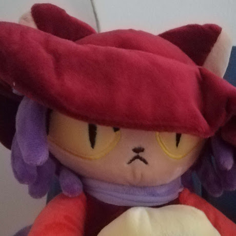

FŐOLDAL
RÓLAM
ELÉRHETŐSÉGEK
CREDITS
Nevem Rátkai Krisztián Bence
Pollák Antal Technikumban tanulok
5 éve blenderezek, 2 éve GMS2-t használok
Több projektben vettem részt köztük:
Sanyi starts a revolution
Mozground
Restoring Summer
És még sok más :D
